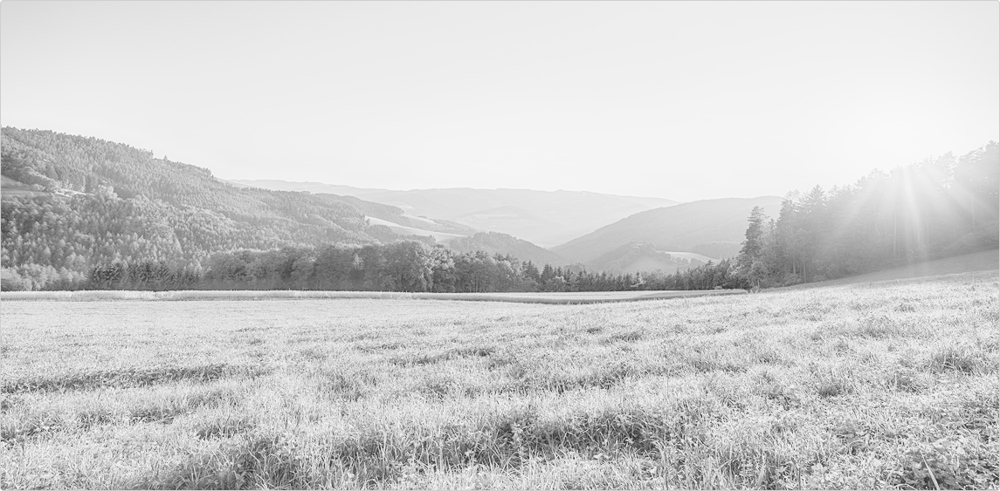

.
.
.
.
Учебник: Базовые знания / Введение в тему /
Опубликовано 00 месяц 2026
title
.
.
.
.
Теория
Креативный код — это способ создавать визуальные формы с помощью алгоритмов. Главное здесь не результат, а процесс: небольшое изменение в коде может полностью изменить визуальный исход. Именно поэтому креативный код ближе к мышлению дизайнера или художника, чем к классической разработке.
Вместо того, чтобы рисовать каждый элемент вручную, мы задаём правило, по которому форма появляется сама

Простая сетка, созданная алгоритмом: одна инструкция повторяется много раз и формирует структуру.
Такие структуры возникают из базовых принципов: повторения, параметров и зависимостей. Мы не описываем каждую фигуру отдельно — мы описываем систему, которая их создаёт.
Шумовые линии — алгоритм управляет движением точек
Круги с параметрами — изменение одного значения создаёт вариации цвета
Система частиц — сложное поведение из простых правил
Практика
Сначала создаётся холст — это область, в которой мы рисуем. Затем в функции draw очищается фон, чтобы каждый запуск начинался с чистого состояния. Переменная
Дальше запускаются два вложенных цикла. Первый отвечает за движение по вертикали, второй — по горизонтали. Вместе они перебирают все координаты сетки. В каждой точке рисуется прямоугольник, и благодаря этому из одной команды получается целая структура.
Здесь добавляется случайность. Вместо фиксированного размера каждый прямоугольник получает своё значение через random(). Это превращает строгую сетку в вариативную систему. Алгоритм остаётся тем же, но результат становится живым.
Мой любимый кубик
Выводы
- Креативный код строится не вокруг рисования, а вокруг правил.
- Повторение позволяет создавать сложные структуры из простых элементов.
- Параметры дают контроль над результатом, а случайность добавляет вариативность и живость изображению.
Синтаксис
createCanvas(width, height); // создаёт область рисования
background(value); // задаёт цвет фона (0–255)
rect(x, y, w); // рисует прямоугольник в точке (x, y)
for (let i = 0; i < n; i++) { // повторяет код n раз }
random(min, max); // случайное число в диапазоне
noLoop(); // останавливает анимацию
Задача
- В коде ниже попробуй изменить сетку так, чтобы она реагировала на позицию.
- Сделай так, чтобы элементы становились больше к центру или, наоборот, уменьшались.
- Постарайся связать размер с координатой x или y, чтобы появился градиент формы.
Здесь добавляется случайность. Вместо фиксированного размера каждый прямоугольник получает своё значение через random(). Это превращает строгую сетку в вариативную систему. Алгоритм остаётся тем же, но результат становится живым.

.
.
.
.
Следующий материал
Инструменты и среда
.
.
.
.